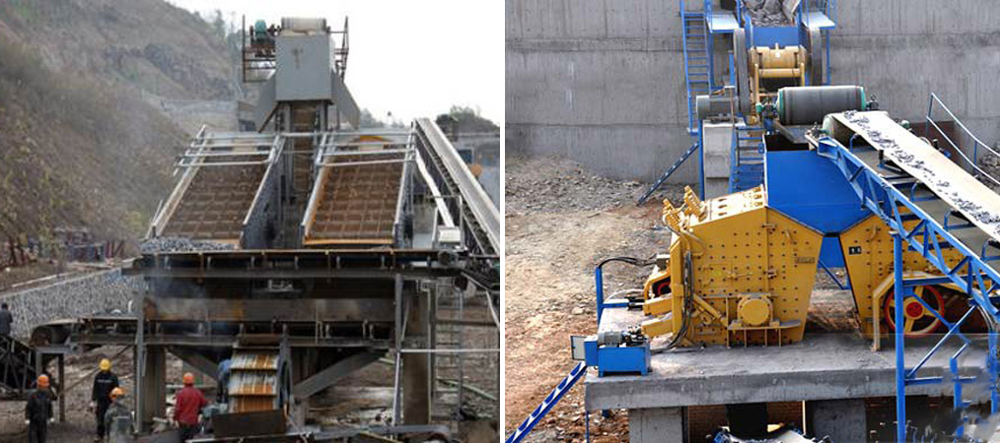

Quarry Crusher
Coal consumption in 2015 will reach peak coal industry will face a extreme test in the future. BP planet quarry crusher power statistics yearbook 2013, according quarry crusher to China's domestic coal production rose by 135% in more than the previous ten years. Through this period, accounting for more than a third of worldwide power consumption development in China.Last year, China's coal consumption in global quarry crusher coal consumption proportion of more than 50% for the initial time. Slowing trend at present, China's coal consumption, in line with the information of China coal market association, the national coal consumption in 1.93 billion within the initial half of 2013 tons, up 1.8% from a year quarry crusher earlier, the development of a 1% fall in 2012, a 7.6% fall in 2011.At the same time, the whole society coal inventory raise.China coal huge coal analyst zhi-bin zhang thinks, the circumstance of coal provide exceeds demand within the quick term won't transform, coal production capacity and inventory stress is still massive. The future coal sector will face a serious test, coal is replaced by new power space is quite large.Total energy from jiang, quarry crusherreport that the new calculation, wind energy will attain 18 million KWH, 2013, 16 million kilowatt hours of water and electrical energy, pv 12 million KWH, add new power quantity have already been in a position to meet the requirements from the output growth in China;In the bureau of power planning, in accordance with a 2015 of your total energy consumption inside the 4 billion tons of needs, new power basically covered each of the new incremental energy, coal demand of new space is very little. Moreover, the environmental protection agency environmental sarft has launched the regional coal consumption control technology quarry crusher approach and policy program study report, clearly place forward the coal consumption quantity manage roadmap for the future, since the 12th five-year, top in the critical air pollution in beijing-tianjin-hebei, the 3 major essential locations within the Yangtze river delta, the pearl river delta pilot;Significantly starker quarry crusher choices-and graver consequences-in combined using the national strategyquarry crusher for the handle of air pollution, we are going to extend to other key areas for the manage of air pollution.During 2020-2030, combined with the greenhouse gas emissions control specifications, the names of your nationwide totally implementing total quarry crusher quantity handle of coal consumption. Quarry Crusher in accordance with the categories may be divided into health-related stoner and quarry crusher.Quarry crusher principle to adapt towards the quantity of sea mine tough rock broken, its standard granite discharging granularity 40 mm or significantly less (90%), the machine can take care of side length one hundred ~ 500 mm the following material, its compressive strength up to 350 million mpa, huge quarry crushing ratio, material just after broken cube grains, etc.Mining rock mechanical refers to discharging granularity is greater than three mm in content material of total discharge capacity is greater than 50% from the quarry crushing machine. Quarry Crusher basic processing reasonably big pieces of material, solution granularity coarser, ordinarily greater than eight mm.A particular gap in between its structure qualities is broken, do not make contact with with each other.Is often divided into the main quarry crusher quarry crusher, quarry crusher and fine crusher.In general by the grinding machine processing of materials is fine, the item quarry crusher particle size is fine, can attain 0.More than 074 mm, and also far more.The qualities in the structure are broken parts (or medium) make contact with one another, medium is adopted by the steel ball, steel rods, gravel or ore block, and so forth.But some mechanical quarry crushing and grinding effect quarry crusher concurrently at the same time, for example autogenous grinding machine.30 five.5 x 1.eight meters from the mill processing ore particle size limit of up to 350 ~ 400 mm quarry crusher Quarry crusher huge crushing ratio, uniform finish product size, simple structure,Quarry crusher trusted operation, straightforward maintenance, financial operation, Quarry crusheretc.PF -i series counterattack crushing function processing components under one hundred ~ 500 mm length, its compressive strength as much as 350 million mpa, major crushing ratio,Quarry crusher material soon after broken cube grains, and so on;PF - II counterattack crusher series, is suitable for crushing hard materials, like cement limestone crushing, has great capacity of production,Quarry crusher discharge the benefits of small
particle size,quarry crusher
Quarry crusher With two broken facequarry crusher approached the extrusion stress, make the material crushing.Jaw quarry crushercrusher, roll crusher, cone crusher are crushed way of broken machinery two, split pieces would be the use of teeth wedge material splitting force for broken, focus on the quarry crusher action of forces, adapted to quarry crusher the brittle material crushing 3, broken material in crushing coal face as under concentrated load amongst two fulcrum (or are) beam, make quarry crusher the material itself to fold the flexor broken.
Quarry crusher Counterattack crusher though a late, but their rapid.It has been China's cement, constructing materials, quarry crusher coal and chemical sector and mineral processing industries is quarry crusher extensively used in all kinds of ores, finely homework.quarry crusher Also utilised for coarse crushing gear from the ore.Counterattack crusher is so fast improvement mainly for the reason that it has the following critical qualities quarry crusher. Item granularity. The quarry crushing phenomenon also small.This kind of broken.Is the use from the kinetic energy of broken ore, and every ore has kinetic energy and the ore quality,quarry crusher is proportional for the.So. In the method of spalling, lump ore is broken by large extent. But smaller particles of ore, below specific conditions is not going to be broken. So the solutions have even broken quarry crusher.
Quarry crusher For the implementation from the state council on December 14 and 15, 2014 premier li keqiang to take a look at throughout the period from the republic of kazakhstan with prime minister Mr Massimov reached important consensus, on December 25 to 26, 2014, China's national improvement and reformquarry crusher commission, director xu shaoshi and kazakhstan investment and development department (hereinafter known as the "parties") minister. The sheik, jointly held in Beijing within the capacity of cooperation dialogue for the initial time. By way of production cooperation policy dialogue, enterprise group project quarry crusher docking and ministerial talks, the two sides discussed the advancing and deepening and investment cooperation amongst two domestic challenges, communicate quarry crusher their important market quarry crusher improvement present predicament, preparing and policy, quite a few consensus quarry crusher. (for additional facts on micro signal zgky114) Soon after consultations, the two sides signed the "meeting minutes", preliminarily determines the 16 early harvest and prospect of 63 projects list, including steel, cement, plate glass, energy, electric power, mining, chemical, as well as other fields. Kazakhstan still hope in food, textile, furniture, developing components, agriculture, tourism and also other fields to carry out the cooperation capacity, and is prepared to provide financing supporting and preferential policies. The two sides agreed to take work and continue to negotiate, to finalize project listing, to discuss cooperation mode, kazakhstan's prime minister in March when going to ha capacity in witness signed cooperation framework agreement and the agreement among a group of companies.
Crushing machine generally used have jaw crusher, gyratory crusher, cone crusher, roller crusher and counterattack crusher, and so on.;Grinding will be the most broadly utilised in mechanical cylindrical grinding machine, which includes rod mill, ball mill, pebble mill along with the grinding machine, and so forth.;Screening that is definitely usually applied in mechanical inertia vibrating screen and resonance screen;Hydraulic classifier and mechanical classifier is widely utilized in wet graded homework grading machinery.Sorting machinery in accordance with the mechanism may be divided into gravity separation, magnetic separator, flotation machine, and unique processing machinery.Sorting machinery could be the earliest in gravity separation, the original piston jig in 1830 ~ 1840 in Germany, for metallic ore separation;The initial magnetic separation machine (with weak magnetic separator) appeared in 1888.Flotation machine appear relatively late, the first mechanical agitation sort flotation machine appeared in 1910.Gravity separation machinery will be the use of ore and waste rock in density and particle size differences, in moving medium separation equipment, which includes jigging machine, heavy media separation and centrifugal separator.Jig is using the aid in the diaphragm or piston or compressed air to kind the water inside the tank water, in order that in mineral grains beneath the action of pulsating flow on sieve in accordance with density, granularity theory.Around the density of particles through the sieve bed rock layer, gathered inside the bottom on the tank be concentrate, by row ore mouth eduction.Applied for separation of metallic ore are mostly trapezoidal jig, double space moving cone bottom jig and complex vibration jig;Applied within the coal side drum jig and sieve jig air chamber.Heavy media separation machine is definitely the use of suspension or heavy liquid as heavy medium, separate the ore and waste rock.Mostly has dense medium vibration chute, heavy liquid medium spin, inclined round heavy medium coal washer and round of heavy medium coal separator.Centrifugal separator is applied inside the recovery of fine slime in metallic ore grain machinery, mostly consists of two components, host and control mechanism.On the host cone drum generated by high speed rotating centrifugal force field, the heavy mineral particle deposition for the drum wall be concentrate, light particles attached to concentrate on the surface, impacted by flow membrane (pulp flow), discharge drum, as tailings.Magnetic separator will be the use of a variety of mineral magnetic variations, together with the assist of magnetic force and mechanical force on the role of mineral separation machinery.Magnetic separator by the magnetic technique, sorting device, feed and discharge device.Magnetic separator is a great deal of much more phyletic, fundamentally have permanent magnet drum magnetic separator, magnetic ring sturdy magnetic separator and high gradient magnetic separation machine, and so on.Flotation machine will be the use of ore grain surface physical and chemical properties, separation of fine mineral machinery.Ore flotation reagents and flotation machine attached by compressed air or mechanical stirring, that may be not simple to be water wetting mineral grains attached around the bubbles (optimistic flotation approach), rose to a liquid surface, by way of the concentrate discharge exhaust device, easy to be water wetting mineral grains in tub as in tailings discharge.Wet dressing concentrate need through dehydration machinery processing, as a way to make solid and liquid separation.Dehydration machinery is often classified as thickener, filter machine, centrifugal machine and drying machine.
E6.120 Sparkles of Shanghai SBM with area of 755㎡ is awaiting you
The exhibition region of SBM is 775㎡, getting the most significant flagship exhibition hall in bauma China E6 Pavilion at this Exposition. SBM bauma Exposition Preparatory Committee has been striving to prepare details on exposition attending because the starting of this year, covering from continuous investigation and development, innovation and upgrading to the launch of 18 kinds of true machines, in the style of Industrial Forest Exhibition Pavilion for the look of 3D transformers, and from the appearance of embryonic type of Ore Museum for the focus of a variety of medias house and abroad. Far more numerous preferential policies show the emphasis and self-confidence of SBM on bauma China 2014.
Request for Quotation
You can get the price list and a SBM representative will contact you within one business day.
- ABOUT USOur company has an experienced and skilled sales service team and a perfect sales service network around the whole China
- SBM NEWSBauma China 2014 SBM Machines to Pour the Heart into Exposition and Create a Future
- SUPPORTSBM's technical support team which is throughout the world and have the professional knowledge level will help you to solve the problems that you meet in the using process of the mining and construction equipments
- PRODUCTION MARKETOur company has an experienced and skilled sales service team and a perfect sales service network around the whole China
- SBM FACTORYSBM (Shanghai shibang machinery Co.,Ltd) has three factories
- SBM HISTORYShanghai cb machinery co., LTD, established in 1995, is located in Shanghai pudong new area
- PROJECTIndia is rich in various mineral resources and it is an important mineral processing market. With the development of local economy